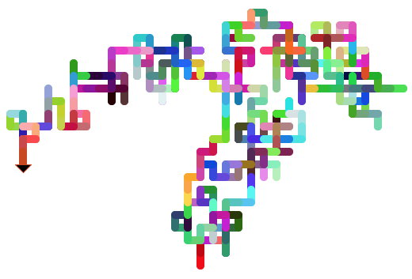

|
Code Examples by Susan Korgen. My résumé (link) describes my 12+ years of software development experience at every level of the stack, from system internals to product design. I am a full-time coder and team leader. I focus on back-end data, with a strong past in UI and design. My professional code runs all over the world. It solves critically important problems and opens urgently timed market opportunities in health care. It is valuable and robust. It speaks highly for my skills. And, it is written in a proprietary language that few can read. For professional growth, I seek more channels of collaboration, greater flexibility in approaches, faster innovation, and deeper learning. I seek variety in problems and approaches. I want more peers. A starting point is to learn new languages that others know:
Below are links to code and demos. I hope you enjoy these snapshots from my journey. For detailed project descriptions, click More... under Project Notes inside the table. Links to other repositories appear after the table. |
| Click to Demo | Click for Code | Features | Status Now | Dev Time | Project Notes |
|---|---|---|---|---|---|
|
Animate the classic recursion problem using pure, raw JavaScript, HTML, CSS, and SVG. The SVG graphics are not downloaded images; they are dynamically generated as SVG XML content when this code runs. Computed data for each tower height the user chooses (5, 6, ... , 12, 13) is retained during the session in case of a repeat demo. The code showcases UX and UI development best practices that are independent of coding language and technology stack. |
Minimum viable product. Graphically illustrates the cost of order 2n computation. Supports a user language choice of English, French, or Chinese and simple conventions to quickly add more user languages. The progress bar is animated on a different (faster) timer than the towers. The multiple timers work independently and are cleared appropriately. I tried more complex decorations on the progress bar, but users found these unhelpful, so I removed them. Paging controls (Next, Previous) when there are long lists of results to display on the screen. Comments at the end of hanoi/main.js list the specific planned updates from the current code, a to-do list to complete the example. This to-do list includes some UI/UX coding best practices that I think are too important to omit from a finished sample. |
12 days. |
Refreshed JavaScript and front-end work after 5 years on the back-end writing object-oriented database, server, and API code. More... ...Less Total time for this example included 2 full days review with JavaScript: The Good Parts by Douglas Crockford. Page 34 mentions the hanoi problem and provides a 3-line loop. Recursion can be challenging to visualize. I was inspired to build my hanoi animation as my first JavaScript code example. As I built the example, I saw I could shape it to demonstrate many UI/UX best practices that I learned during 7 years of front-end development using JavaScript, prior to my more recent server side experience. The past work included building JavaScript UIs and more than one UI generation framework that output HTML and JavaScript |
||
|
Click More... and ...Less in the notes at far right. |
Expand and contract table rows on this page. |
Done. |
2 days. |
Half a day: Manipulated the DOM using JavaScript. More... ...Less Why was this code so much quicker to complete than hanoi? It leverages language-agnostic skills I use daily. These skills transferred smoothly. Since 2016, in back-end development, I have worked with structured data formats, transforming and storing data in a proprietary database that offers both object-oriented and SQL projections. When you spend all your time traversing hierarchical data structures and finding optimal paths to the data needed, the thinking is similar, regardless of language or output format: JSON, XML, classes, SQL result sets, FHIR, C-CDA, or other. |
|
|
|
Coffee machine: Procedural |
Python Unit 16 |
— |
Udemy.com, 100 Days of Code: Python Bootcamp 2021, with Dr Angela Yu. Units 15-58 are intermediate, 59-100 are advanced and professional. |
|
|
|
Coffee machine: OOP |
Python Unit 17 |
— |
Object-oriented refactor of the coffee machine. Exercise designed as a mix of instructor's classes and student work. Code comments note the boundaries. |
|
|
|
Packages (turtle, tkinter, colorgram) and tuples. |
Python Unit 18 |
— |
Download for a graphics demo (see snapshot at lower right). |
|
Objectives for this portfolio are to:
Out of scope here, other work is planned or (if linked) in progress:
|
 |
In Iron Man ®2008 Marvel Universe, the villain industrialist screams at a failing engineer: "Tony Stark was able to build this in a cave! With a box of scraps!" It can be a challenge to replicate results, even when scriptwriters are handling the science.
is the maritime flag signal for the letter
"K" (Korgen) or the message "I wish to communicate with you". Credit: Public Domain
https://commons.wikimedia.org/w/index.php?curid=498590